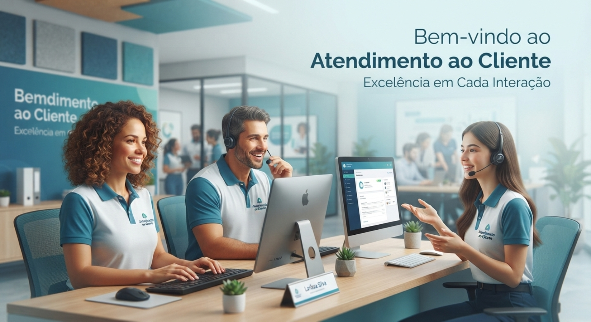

Transformando necessidades empresariais em soluções educacionais.
Design Instrucional & Educação Corporativa:
Conectando pessoas, e aprendizado.
Profissional especializada no desenho, roteirização e desenvolvimento de experiências de aprendizagem corporativa. Atuo no alinhamento entre metodologias pedagógicas, necessidades de T&D e tecnologias digitais para gerar impacto real no desempenho de equipes.
DESIGN INSTRUCIONAL
EDUCAÇÃO CORPORATIVA
T&D / RH ESTRATÉGICO
TECNOLOGIA EDUCACIONAL
Alinhamento Instrucional Estratégico
PROBLEMA DE APRENDIZAGEM
OBJETIVOS MENSURÁVEIS
ESTRATÉGIA INSTRUCIONAL
EXPERIÊNCIA INTERATIVA
AVALIAÇÃO DE RESULTADOS
Base Pedagogia
Graduação em Pedagogia. Domínio sólido de teorias da aprendizagem, andragogia, processos cognitivos, design de avaliação e facilitação do ensino focado no aprendiz adulto.
Visão de T&D e RH
Formação Técnica em RH e capacitação em Educação Corporativa. Visão sistêmica para diagnosticar lacunas de desempenho e alinhar treinamentos às metas organizacionais e cultura da empresa.
Tecnologia Educacional
Desenvolvimento prático de soluções digitais interativas utilizando HTML5, CSS3, JavaScript e ferramentas de autoria, criando simulações e conteúdos responsivos sob medida.
01
Diagnóstico
Identificação do problema de negócio e levantamento de necessidades reais de treinamento (LNT).
02
Análise do Público
Mapeamento do perfil dos colaboradores, contexto de trabalho, rotina e pré-requisitos cognitivos.
03
Objetivos de Aprendizagem
Definição de metas claras e mensuráveis com base na Taxonomia de Bloom (verbos observáveis).
04
Estratégia Instrucional
Escolha da abordagem ideal (simulação, microlearning, aprendizagem baseada em problemas, etc.).
05
Roteirização & Storyboard
Planejamento detalhado de telas, navegação, copys educacionais, interações e feedbacks.
06
Desenvolvimento
Construção técnica da solução interativa (HTML/CSS/JS, multimídia ou plataformas digitais).
07
Avaliação & Métricas
Elaboração de testes formativos/somativos e planejamento dos indicadores de impacto esperado.
Simulação & Compliance

LGPD & Cibersegurança Corporativa
Problema: Inconformidade com normas LGPD e vulnerabilidade humana a phishing e ransomware.
Simulação de Crise
Compliance
HTML/JS
Branching Scenario

Atendimento B2B & Gestão de Contas
Problema: Dificuldade no mapeamento de decisores executivos e alto índice de churn em contas B2B.
Cenários Ramificados
Vendas B2B
Gestão de Crise
Guia Interativo / Microlearning

Comunicação & Feedback Remoto
Problema: Ruídos em ferramentas assíncronas e feedbacks ineficazes gerando desalinhamento em times remotos.
Guia Prático
Comunicação Assíncrona
Canva
Prática Guiada / SVG

Treinamento Interativo de EPIs
Problema: Erros recorrentes na identificação e inspeção de Equipamentos de Proteção Individual em operação.
Prática Visual
Segurança do Trabalho
SVG Interativo
Aprendizagem Baseada em Cenários
Coloca o aprendiz diante de decisões do mundo real, permitindo vivenciar consequências em um ambiente seguro.
Simulação de Crise
Engaja os participantes ao recriar momentos de alta pressão (ex: ataques de cibercrime) para treinar protocolos.
Microlearning
Estrutura o conteúdo em pílulas focadas e objetivas para rápida assimilação e aplicação no fluxo de trabalho.
Feedback Imediato
Fornece orientações corretivas e explicativas logo após cada resposta, consolidando o aprendizado formativo.
Gamificação Estrutural
Uso de mecânicas de pontuação, progresso e cenários para impulsionar a motivação intrínseca do colaborador.
Prática Guiada Interativa
Exercícios visuais hands-on (como inspeção de EPIs) para validar habilidades práticas antes da execução real.
Design Instrucional
- Levantamento de Necessidades (LNT)
- Taxonomia de Bloom & Objetivos
- Roteirização & Storyboarding
- Design de Avaliação da Aprendizagem
- Design de Experiência do Aprendiz (LX)
- Andragogia e Aprendizagem de Adultos
T&D & Educação Corporativa
- Gestão de Processos de Aprendizagem
- Mapeamento de Competências
- Desenvolvimento de Pessoas & RH
- Comunicação e Engajamento
- Treinamentos de Compliance & Operacionais
- Alinhamento com Indicadores de Negócio
Tecnologia Educacional
- HTML5 e Semântica Web
- CSS3 & Layouts Responsivos
- JavaScript para Interatividade Lógica
- Manipulação de SVG Educacional
- Design de Interfaces Interativas (UI/UX)
- Recursos Digitais Multimídia
Ferramentas & Recursos
- Canva (Apresentações e Guias)
- Editores de Código (VS Code)
- Plataformas LMS e Web Apps
- GitHub / GitHub Pages
- Ferramentas de Diagramação
Vamos transformar conhecimento em experiências de aprendizagem?
Estou disponível para oportunidades como Designer Instrucional, Analista de T&D e especialista em Educação Corporativa.